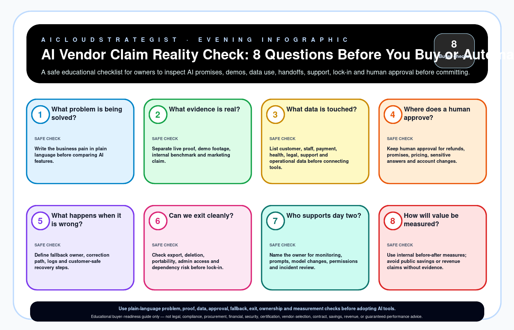

AI Vendor Claim Reality Check: 8 Questions Before You Buy or Automate
A safe educational checklist for owners to inspect AI promises, demos, data use, handoffs, support, lock-in and human approval before committing.

Eight buyer questions
| # | Question | Safe check |
|---|---|---|
| 1 | What problem is being solved? | Write the business pain in plain language before comparing AI features. |
| 2 | What evidence is real? | Separate live proof, demo footage, internal benchmark and marketing claim. |
| 3 | What data is touched? | List customer, staff, payment, health, legal, support and operational data before connecting tools. |
| 4 | Where does a human approve? | Keep human approval for refunds, promises, pricing, sensitive answers and account changes. |
| 5 | What happens when it is wrong? | Define fallback owner, correction path, logs and customer-safe recovery steps. |
| 6 | Can we exit cleanly? | Check export, deletion, portability, admin access and dependency risk before lock-in. |
| 7 | Who supports day two? | Name the owner for monitoring, prompts, model changes, permissions and incident review. |
| 8 | How will value be measured? | Use internal before-after measures; avoid public savings or revenue claims without evidence. |
Truth boundary
Educational buyer-readiness guide only — not legal, compliance, procurement, financial, security, certification, vendor-selection, contract, savings, revenue, or guaranteed-performance advice.
This publication uses educational guidance and does not claim client results, certifications, savings, rankings, compliance status, testimonials, or legal/procurement advice.
Downloads

Buyer FAQ
When should a business use this checklist?
Use it before approving an AI tool, automation project or vendor demo so the owner can separate evidence, data access, human approval, fallback ownership, lock-in and value measurement from marketing claims.
Does it replace legal, procurement or security review?
No. It is an educational buyer-readiness guide only and does not provide legal, compliance, procurement, financial, security, certification, vendor-selection, contract, savings, revenue or guaranteed-performance advice.
What is the safest next step after gaps are found?
Keep the next step small and evidence-led: document the gaps, name the business owner, define human approval and fallback paths, and request a diagnostic fit check before committing to a larger AI, cloud or automation build.
Need an evidence-led next step?
Use a diagnostic fit check to turn unclear AI vendor claims into an owner-safe review path before larger AI, cloud or automation spend.